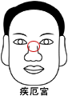

疾厄�m |
（山根及鼻�抛笥椅恢茫� |

一、山根�嗔训娜�
１．��常有疾病�l生。
２．意外事件大都�c生命的安危有�P。
３．���h�x故�l，出外�\�l展。
二、山根有�y的人
１．如�橐思y，易收他人�轲B子，或自己被人收�B。
２．如�橐思y，小心意外�碾y，尤其要注意����，如���暑^上的直�y，�t��
五�R分�浦��y，��小心�M��。
３．如���M�y，小心暗疾或挫折，挫折指婚姻及事�I挫折。
三、印堂出�F青筋的人
１．���A防�I病。
２．��防止身�w上的日��衰弱。
四、鼻�乓���人
１．防止身�w上�牟〔��唷�
２．防止婚姻不幸，一�Y再�Y。
五、鼻�懦霈F青筋的人
１．防止慢性疾病的出�F，如胃�c病、慢性支�夤苎�、便秘或痔��。
２．寒�馔�小心�U邪入侵。
六、山根�S�M的人
１．身�w���眩���疾病抵抗力��。
２．夫�D婚姻生活美�M，百�P和�Q。
３．���獬渥悖�十足好�\。
�湓]：
１．山根低陷或有痣及�M�y：一生中易����，注意40�q41�q有大�y。
２．�凵嫌泄峭谷缃Y��者：一生事�I或婚姻��有一次相��大的挫折。
如有痣出�F或�馍�晦��，休咎�c上相同，主身弱多病或��困。
男：易�榕�色所�T。
女：易�槟腥怂�欺，所嫁之人�y免多病，百事�p身。
３．看山根���c�馍��Y合，山根�馍�灰暗�樯�病之前兆。
４．女命山根灰暗�馍�漫及山根�膳远��_夫座，必有通�χ�事��。山根黑�庀仑�年上，是�榧胰�
有病，黑�庠街兀�病亦愈重，甚至死亡。
５．山根有痣主刑�w，女��改嫁，男再娶，如在下部正中央主�慕��M死。
６．山根上部之痣，多以牢�z之������，在左右�榷喟牖嘉覆 �